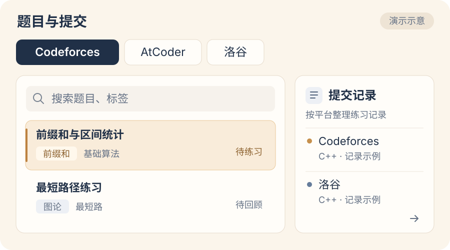
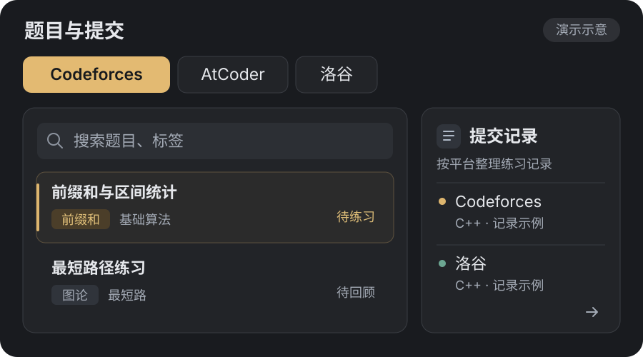
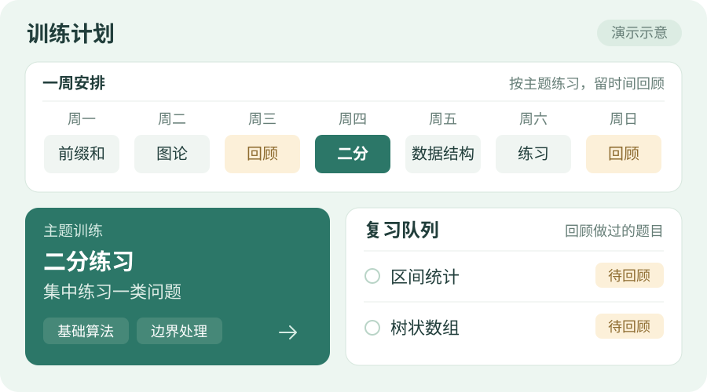
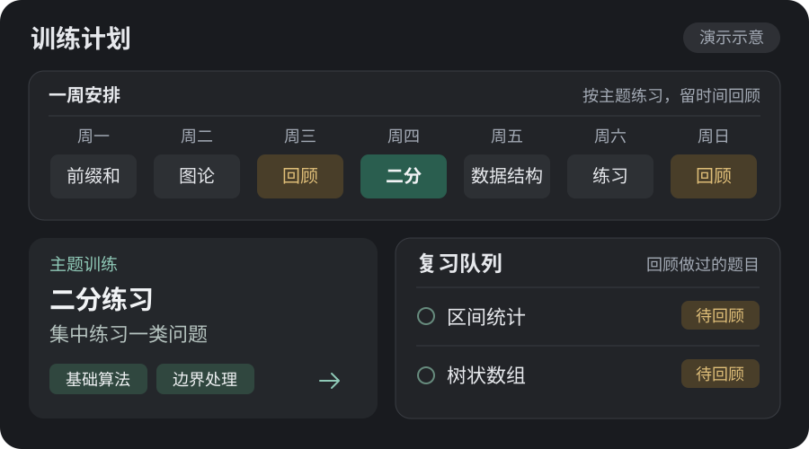

题目与提交
按平台浏览与搜索题目，统一整理自己的提交记录。
通过题目标签找到练习方向，再回到记录里查看自己的尝试。



浏览题目、整理提交记录，按主题安排训练，再回顾做过的题目。
按平台浏览与搜索题目，统一整理自己的提交记录。
通过题目标签找到练习方向，再回到记录里查看自己的尝试。


按主题安排训练，集中练习相关题目；通过复习回顾做过的题目与自己的掌握情况。
把新练习和回顾放进同一份安排，给做过的题目留一点时间。

